Relational Model¶
约 1858 个字 14 张图片 预计阅读时间 7 分钟
Structure of Relational Databases¶
Basic Structure¶
Formally, given set \(D_1, D_2, \cdots, D_n\), a relation \(r\) is a subset of \(D_1 \times D_2 \times \cdots \times D_n\). —— a Cartesian product (笛卡儿积) of a list of domain \(D_i\)
Thus a relation is a set of n-tuple \((a_{1j}, a_{2j}, \cdots, a_{nj})\) where each \(a_{ij} \in D_i(i \in [1, n])\)
Attribute Types¶
- Each attribute of a relation has a name.
- The set of allowed values for each attribute is called the domain (域) of the attribute.
- The special value null is a member of every domain.
Relation Schema¶
Assume \(A_1, A_2, \cdots, A_n\) are attributes, then \(R = (A_1, A_2, \cdots, A_n)\) is a relation schema.
e.g. instructor = (ID, name, dept_name, salary).
A relation instance \(r\) defined over schema \(R\) is denoted by \(r(R)\). (or \(r(R)\) us a relation on relation schema \(R\))
e.g. instructor(instructor-schema) = instructor(ID, name, dept_name, salary)
Relation Instance¶
The current values (i.e. relation instance) of a relation are specified by a table.
An element \(t\) of \(r\) is a tuple, represented by a row in a table.
- 若 \(t\) 是一个元组，那么 \(t[name]\) 表示元组 \(t\) 中名称为 \(name\) 的属性的值。
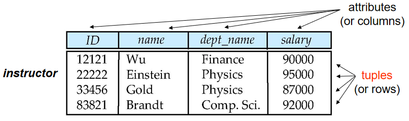
- 元组的顺序是无关紧要的，即元组的顺序不影响关系的定义
- 一个关系实例中的元组是不重复的
- 属性的值是原子的，即属性的值不能再分解
Key¶
Let \(K \subseteq R\) be a set of attributes of relation schema \(R\). Then
-
\(K\) is a superkey for \(R\), if values for \(K\) are sufficient to identify a unique tuple of each possible relation r(R)
如果 \(K\) 的值足以唯一标识关系 \(r(R)\) 中的每个元组，则 \(K\) 是关系 \(R\) 的超键
e.g. \(\{ID\}\), \(\{ID, name\}\)
-
\(K\) is a candidate key for \(R\), if \(K\) is is minimal superkey for $R
如果 \(K\) 是最小的超键（\(K\) 的任何真子集都不是超键，\(K\) 中没有冗余的属性），则 \(K\) 是关系 \(R\) 的候选键
-
\(K\) is a primary key for \(R\), if \(K\) is a candidate key and is defined by user explicitly.
使用者从候选键中选择其中一个作为主键
-
Foreign Key (外键/外码)
Assume there exists relations \(r\) and \(s\): \(r(A, B, C)\), \(s(B, D)\)（\(B\) is the primary key of \(s\)）, we can say that attribute \(B\) in relation \(r\) is foreign key referencing \(s\), and \(r\) is a referencing relation (参照关系), and \(s\) is a referenced relation (被参照关系).
- 参照关系中外码的值必须在被参照关系中实际存在, 或为 null。
Note
Primary key and foreign key are integrated constraints.
主键和外键都是完整性约束的一种。
Example
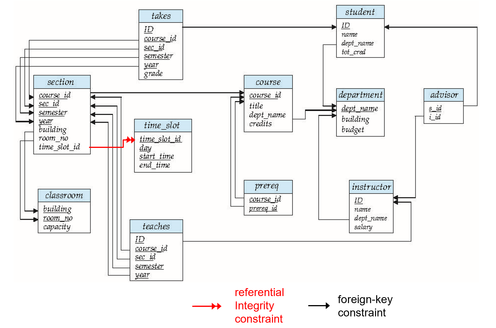
- 图中每一个带有下划线的属性都是一个外键，它们分别参照了另一个关系中的主键。
Fundamental Relational-Algebra Operations¶
关系代数有六种基本操作：
- select 选择
- project 投影
- union 并
- set difference 差（集合差）
- Cartesian product 笛卡尔积
- rename 重命名
这些操作把一个或两个关系作为输入，产生一个新的关系作为输出。
Select¶
Notation: \(\sigma_p(r)=\{t|t\in r\ and\ p(t)\}\) , where \(p\) is called selection predicate.
其中 p 是通过逻辑运算符把各项连接起来的一个条件表达式，每一项都具有如下的形式： $$ < attribute > op < attribute / constant > $$ 其中 \(op\) 属于 =, <, >, <=, >=, != 等。
Example
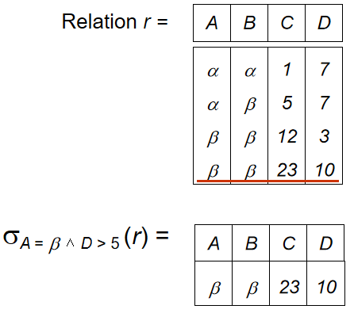
Project¶
Tip
可以认为 select 是对行的操作，而 project 是对列的操作。
\(\prod_{A_1,A_2,\ldots, A_k}(r)\) where \(A_i\) are attribute names and \(r\) is a relation name.
- 这个操作相当于从关系 \(r\) 中删除除了 \(A_1, A_2, \ldots, A_k\) 之外的所以的属性。
- 进行操作后，重复的元组将会被删除（关系是一个集合）
Example
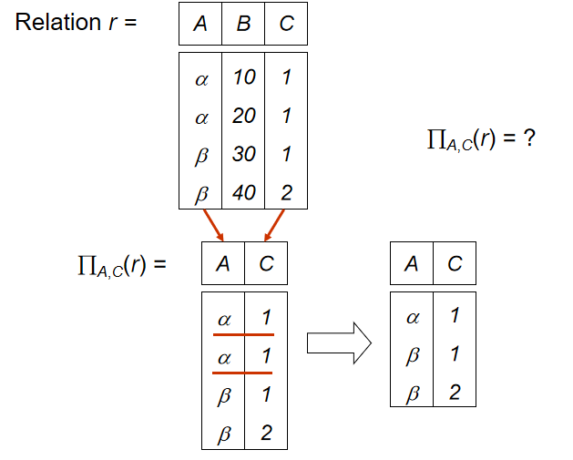
Union¶
The union operation allows us to combine two relations.
\(r\cup s = \{t| t\in r \ or \ t\in s\}\)
- \(r\) and \(s\) must have the same arity (i.e., the same number of attributes)
- The attribute domains must be compatible
Example
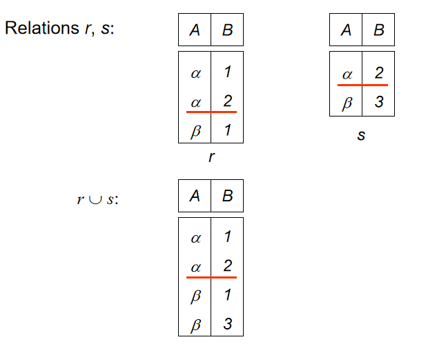
Set Difference¶
\(r-s=\{t|t\in r\ and\ t\notin s\}\)
Set differences must be taken between compatible relations.
- \(r\) and \(s\) must have the same arity.
- Attribute domains of \(r\) and \(s\) must be compatible.
Example
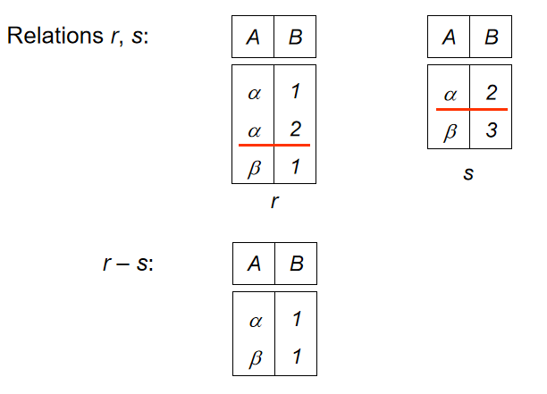
Cartesian Product¶
\(r\times s =\{t\ q|t\in r\ and\ q\in s\}\)
- Assume that attributes of \(r(R)\) and \(s(S)\) are disjoint (i.e., \(R \cap S = \emptyset\)).
- If attributes of \(r(R)\) and \(s(S)\) are not disjoint, then renaming for attributes must be used.
Example
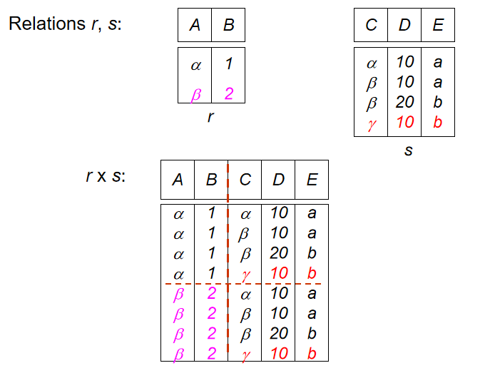
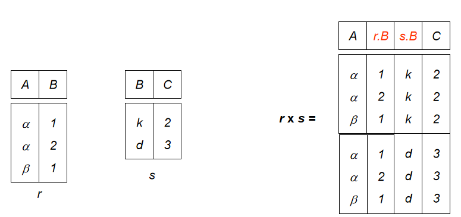
Rename¶
Allows us to refer to a relation by more than one name. 给一个关系及其属性重命名。
\(\rho_{X(A1, A2, \cdots, An)}(E)\) —— 给关系 \(E\) 重命名为 \(X\)，并且给属性重命名为 \(A1, A2, \cdots, An\)。
寻找大学中的最高工资
-
find instructor salaries that are less than some other instructor salary (i.e. not maximum)
using a copy of instructor under a new name \(d\).$ \prod_{instructor.salary}(\sigma_{instructor.salary<d.salary}(instructor \times \rho_d(instructor))) $
-
find the largest salary
$ \prod_{instructor}-\prod_{instructor.salary}(\sigma_{instructor.salary}<d.salary(instructor\times \rho_d(instructor))) $
首先，我们找到所有工资小于其他教师的工资的教师（得到一个不是最高工资构成的集合），然后从所有教师的工资中减去这些不是 maximum 的工资，就得到了最高的工资。
Additional Relational-Algebra Operations¶
- Set Intersection 交
- Natural Join 自然连接
- Division 除法
- Assignment 赋值
我们定义的这些额外操作并没有拓展关系代数的能力，但是它们可以简化表达式，能提供相当程度的便利。
Set Intersection¶
\(r\cap s=\{t| t\in r\ and\ t\in s\}\)
- \(r, s\) have the same arity
- attributes of \(r\) and s are compatible
$ r \cap s = r - (r - s) $
Example
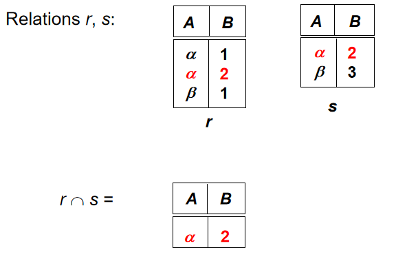
Natural Join¶
自然连接是一种特殊的笛卡尔积，只有当两个关系中相同的属性具有相同的值时，这个元组才会出现在结果中。 相当于先做笛卡尔积，然后再做选择。
\(r\bowtie s\) is a relation on schema \(R \cup S\) obtained as follows:
- Consider each pair of tuples \(t_r\) from \(r\) and \(t_s\) from \(s\).
- If \(t_r\) and \(t_s\) have the same value on each of the attributes in \(R \cap S\), add a tuple $t $ to the result, where
- \(t\) has the same value as \(t_r\) on \(r\)
- \(t\) has the same value as \(t_s\) on \(s\)
Example
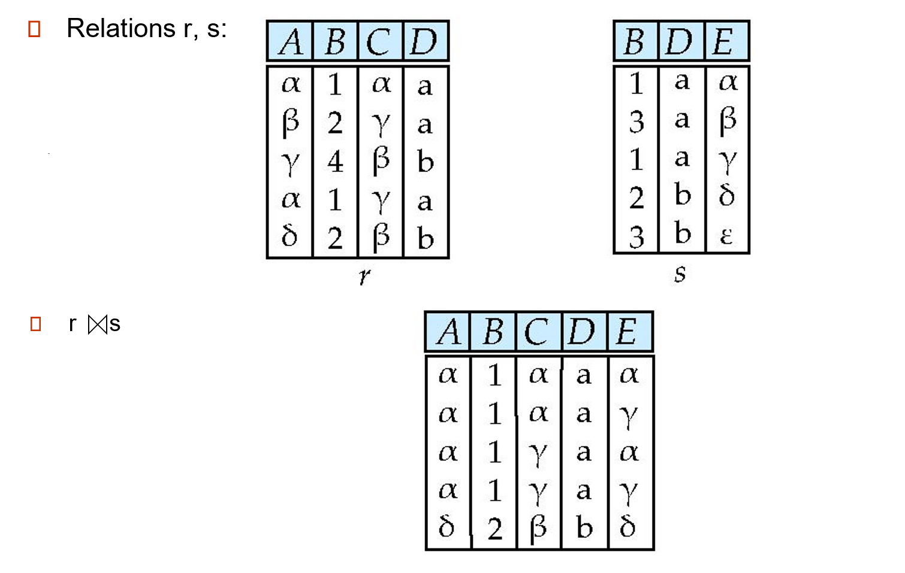
-
Theta Join
\(r \bowtie_{\theta} s = \sigma_{\theta}(r \times s)\)
where \(\theta\) is the predicate on attributes in the schema, that is applied to the Cartesian product of \(r\) and \(s\).
Outer Join
Computes the join and then adds tuples form one relation that does not match tuples in the other relation to the result of the join.
Uses null values:
- null signifies that the value is unknown or does not exist
- All comparisons involving null are (roughly speaking) false by definition
Outer join can be expressed using basic operations.
- \(r\rtimes s=(r\bowtie s)\cup (r-\cap_R(r\bowtie s)\times \{null,\ldots,null\})\)
- \(r\ltimes s=(r\bowtie s)\cup \{null,\ldots,null\}\times (s-\cap_R(r\bowtie s))\)
- \(r\)⟗\(s\) \(=(r\bowtie s)\cup (r-\cap_R(r\bowtie s))\times \{(null, \ldots)\}\cup\{(null,\ldots,null)\}\times (s-\cap_s(r\bowtie s))\)
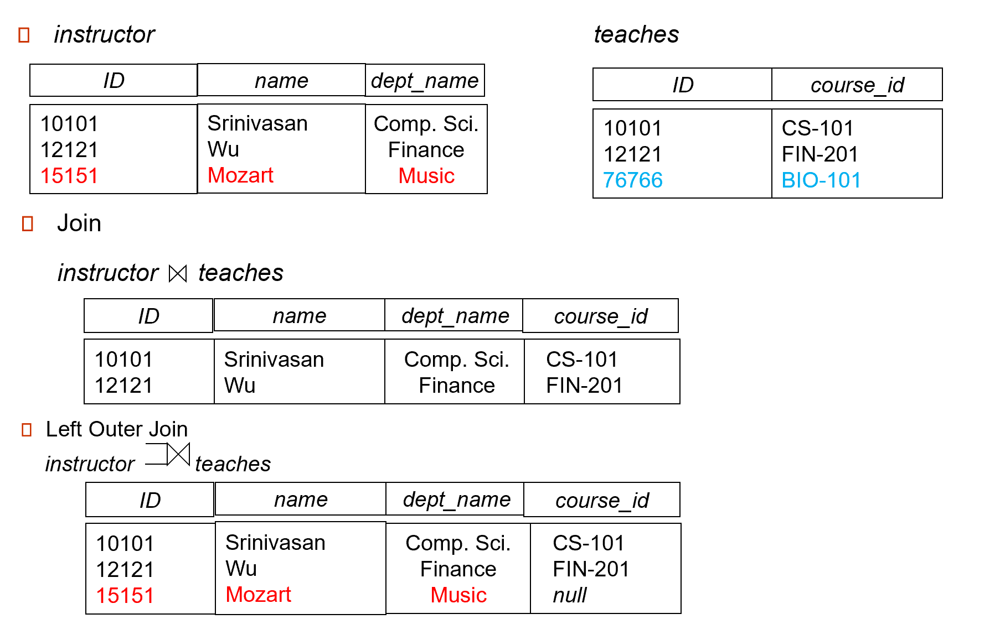
Division¶
Notation: \(r(A) \div s(B)\)
Let \(r\) and \(s\) be relations on schemas \(R\) and \(S\), respectively, where \(R = (A1, …, Am, B1, …, Bn)\) and \(S = (B1, …, Bn)\). Then, the result of \(r \div s\) is a relation on the schema \(R – S = (A1, …, Am)\) and \(r \div s = \{ t | t \in \prod_{R-S}(r) \land \forall u \in s ,tu \in r \}\).
相当于先在 \(r\) 中找到满足所有 \(s\) 中的属性的元组，然后再投影。
Example
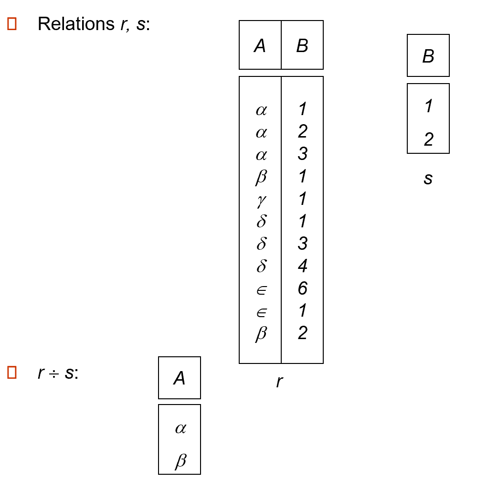
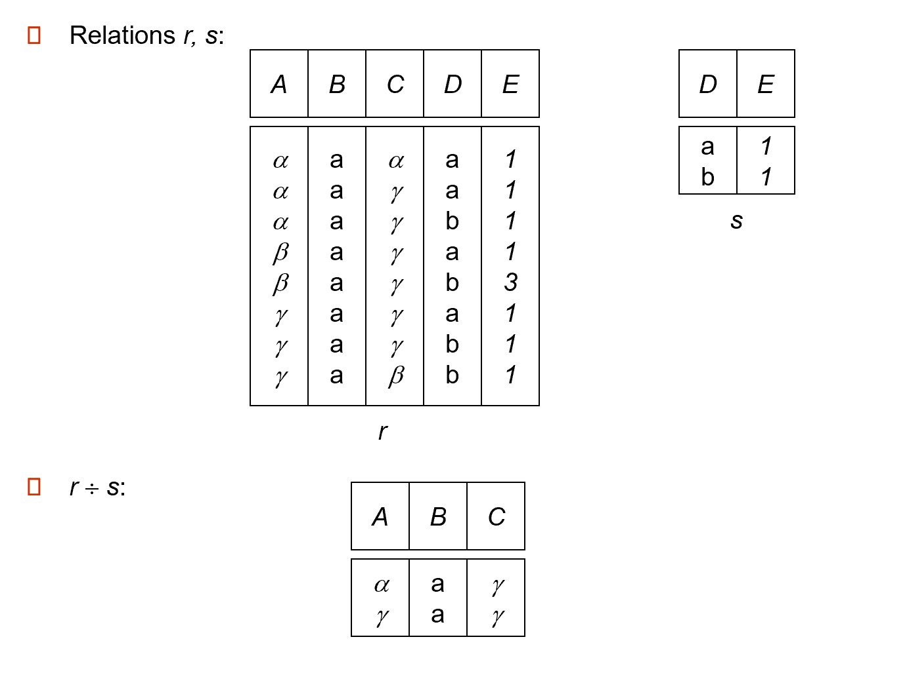
Assignment¶
赋值（\(\leftarrow\)）就是把一系列的关系代数操作的结果用一个新的关系名字来表示，从而大大简化表达式。
Summary
- Union, set difference, Set intersection 为双目、等元运算
- Cartesian product, Natural join, Division 为双目运算
- Project, select 为单运算对象 (i.e., 单目运算)
Extended Relational-Algebra Operations¶
Generalized Projection¶
广义投影拓展了投影操作，允许我们在投影列表中使用算术函数
$ \prod_{F_1, F_2, \cdots, F_n} (E) $
其中 \(E\) 是任意关系代数的表达式，\(F_i\) 是属性名或者是包含了常量和属性的算术表达式。
Aggregation¶
Aggregation function（聚合函数）takes a collection of values and returns a single value as a result.
- avg: average value
- min: minimum value
- max: maximum value
- sum: sum of values
- count: number of values
Aggregate operation in relational algebra： $$ G_1,G_2,\ldots,G_n \mathcal{G}_{F_1(A_1),\ldots F_n(A_n)}(E) $$ 其中 \(E\) 是任意的关系代数表达式，\(G_i\) 是属性名，\(F_i\) 是聚合函数，\(A_i\) 是属性名。
Example
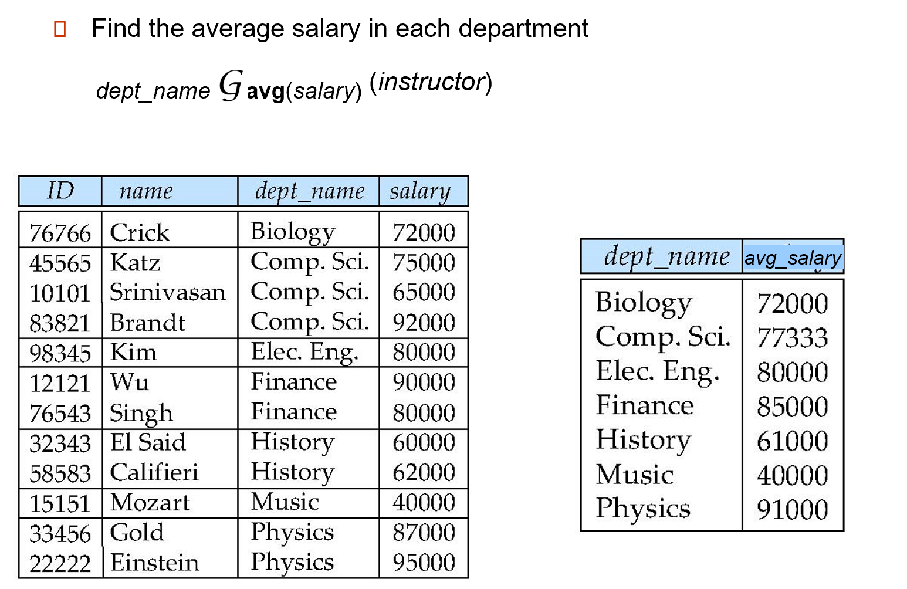
聚合之后的分组结果是没有名字的，但我们可以通过重命名操作来为其命名。例如
dept_name G avg(salary) as avg_sal (instructor)
Modification of the Database¶
对数据库的修改操作包括：
- Deletion 删除
- Insertion 插入
- Updating 更新
Deletion¶
- 从 database 中删除被选中的元组
- 只能删去整个 tuple，不能仅删除 tuple 中的某个属性
- \(r \leftarrow r - E\)
Insertion¶
- 插入一个新的元组到 database 中
- 插入的元组必须符合关系的 schema
- \(r \leftarrow r \cup E\)
Updating¶
- 改变一个元组中的一个或多个属性的值
- \(r \leftarrow \Pi_{F_1, F_2, \ldots, F_i} (r)\)
- \(F_i\) 只会对 \(r\) 中的第 \(i\) 个属性进行修改